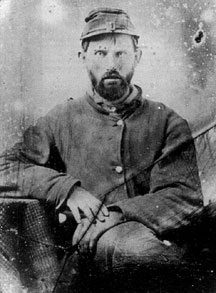

|

NAME: Jacob Frederick Sutter
BORN: 1827
DIED: 1892
ALLEGIANCE: Union
HIGHEST RANK: Private
UNIT: 42nd Pennsylvania Volunteer Infantry (also known as the
Bucktails, the 13th Pennsylvania Reserves, and the 1st
Pennsylvania Rifles), Company F (Irish Infantry)
RECORD: Enlisted May 2, 1861. Mustered in on June 21,
1861, at Camp Curtin, Harrisburg, Pennsylvania. Wounded at
the Battle of Gaines's Mill, Virginia, on June 27, 1862.
Wounded near Sharpsburg, Maryland, in September 1862.
Discharged for disability on March 13, 1863.
|
|
When Jacob Frederick Sutter enlisted in the Union army in
May 1861, he had no idea the unit he was joining would be
one of the hardest-fighting regiments in the Civil War, or
that it would have so Many names. Sutter and other enlisted
men from Carbon County, Pennsylvania, became Company F (also
called the Irish Infantry) of the 1st Pennsylvania Rifles,
also called the 13th Pennsylvania Reserves, but better known
as the 42nd Pennsylvania Infantry.
Because most of the 42nd's companies hailed from
Pennsylvania's northern-tier counties--an area known as the
Wildcat District due to the boisterous, rough-and-ready
lumbermen who lived and worked there--the unit was soon
nicknamed the Wildcat Regiment. But as the Wildcats traveled
south to Camp Curtin in Harrisburg for training, they
fastened deer tails to their hats, and thus acquired the
nickname by which they would become best known--the
Bucktails. (Sutter apparently had not yet acquired his own
buck tail when he sat for this photo.)
At Camp Curtin, Sutter turned down a promotion to corporal.
Writing home to a friend, he said, "I could have become a
corporal already, but I did not want it, for I know that I
could not persist in it, for I am a dumb johnnie and for
that reason I did not desire it."
"Dumb johnnie" or not, Sutter was soon living by his wits in
the thick of the war's fighting. The Bucktails distinguished
themselves as skirmishers and sharpshooters in western
Virginia and in an engagement at Dranesville, Virginia,
before the close of the war's first year.
Sutter suffered a gunshot wound to the head at the Battle of
Gaines' Mill, Virginia, in June 1862, during the Peninsula
Campaign. After recuperating, he rejoined his company at the
beginning of September. A few weeks later, while on picket
duty near Sharpsburg, Maryland, he was shot in the right
arm. The wound was severe, but he recovered in time to fight
in the Battle of Fredericksburg, Virginia, in December.
For the remainder of his military service, the twice-wounded
Sutter struggled to keep up with the Bucktails. When he
received yet another injury in February 1863, he could no
longer function as a soldier. He was discharged on March 13,
1863.
Sutter returned home to Parryville, Pennsylvania, and tried
to resume a normal life with his wife and children, but his
physical condition deteriorated. His withered right arm
caused him great pain and he suffered bouts of dementia.
After 30 years of suffering, Sutter died on July 28,1892.
Source: Civil War Times Illustrated
40:3 (June 2001), 80.
|